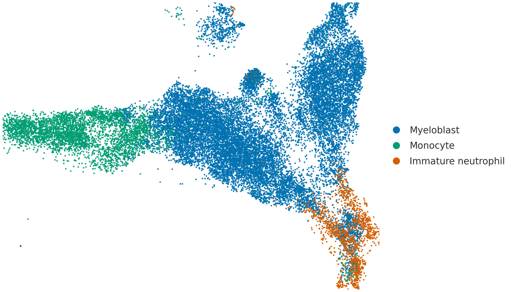

文卓谦 博士
副教授 · 博士生导师 · 逸仙学者
中山大学中山医学院病理生理学教研室
学术带头人简介与学术历程
文卓谦博士，中山大学中山医学院副教授、博士生导师，中山大学引进人才，“逸仙学者计划”新锐学者。
2013年博士毕业于香港大学医学院，导师为梁如鸿教授；2015-2019在哈佛大学医学院/麻省总医院（MGH）再生医学中心开展博士后研究工作，合作导师为国际干细胞领域著名学者 David T. Scadden 教授；2019-2024于香港大学就任研究助理教授；2024年全职加盟中山医学院组建独立课题组。
主要研究急性髓系白血病（Acute Myeloid Leukemia, AML）发生与复发的分子调控机制（包括表观遗传、代谢与免疫微环境的相互作用）并研发对应的靶向治疗方案。相关研究成果以第一作者或通讯作者发表在 Blood、Leukemia、Nature Communications、Haematologica 等国际顶尖学术期刊。
学术承继轨迹 (Academic Pedigree)
三大科学支柱与前沿技术平台
我们秉持“立足根本生物学规律，服务临床重大紧迫需求”的理念，构建从分子机制解析、前临床疾病模型到临床试验验证的全链条科研闭环。

单细胞转录组图谱解析白血病细胞状态异质性
依托高通量单细胞 RNA 测序（scRNA-seq），课题组系统绘制不同给药方案下 GFP 高表达（GFPhigh）白血病细胞的转录组图谱。UMAP 嵌入将 25,252 个细胞清晰划分为原始粒细胞、单核细胞与未成熟中性粒细胞三类主要状态，为解析药物应答与耐药克隆演化提供单细胞分辨率的视角。
核心转化技术平台 (Translational Platforms)
切换下方平台卡片，查看疾病模型技术参数与科研支撑能力：
学术论文与重大科学突破
我们注重基础科学原创性与临床转化突破。以下展示文卓谦博士及团队的核心代表作，支持按研究方向与年份进行实时筛选。
招贤纳士与研究生招收
文卓谦实验室正处于快速发展阶段，科研经费充足，实验平台先进，与哈佛大学、香港大学及各大临床医院保持深度紧密合作。诚邀怀揣学术梦想的青年才俊加盟！
应聘与咨询方式
有意者请将个人详细简历（包括学习与科研经历、已发表文章清单等）发送至文卓谦老师电子邮箱，邮件主题请注明：【应聘岗位/研究生报考】+ 姓名 + 专业。
实验室新闻与科研动态
联系方式与地理位置
中国广东省广州市越秀区中山二路74号 中山大学广州校区北校园 科技楼（病理生理学教研室）
广州地铁 1号线 烈士陵园站（D出口步行约5分钟）；地铁 6号线 东山口站（A出口步行约10分钟）。